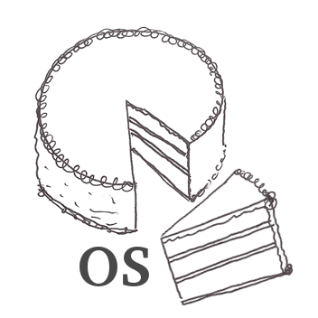

Hi, I'm Vsevolod Dyomkin (or Domkin according to the passport) from Kyiv, Ukraine.
I'm a Lisp programmer and enthusiast, a Natural Language Processing researcher, an occasional writer/blogger, and a teacher. This website gathers some essential stuff from my professional life.
I'm a Lisp programmer and enthusiast, a Natural Language Processing researcher, an occasional writer/blogger, and a teacher. This website gathers some essential stuff from my professional life.

Over the years, I've developed a number of open-source Lisp projects, which are gathered in my github account. Among them are:
- cl-nlp - a Lisp NLP toolkit
- cl-redis - a Redis client
- wiki-lang-detect - highest-quality text language identification utility for 156 languages
- plain-text - a readability-like utility for extracting content text from websites
- rutils - a collection of modern syntactic utilities
- should-test - an intuitive test framework
For several years, I had been working as a tech lead for the NLP team at Grammarly doing some exciting research in mistake detection and correction for the English language. Currently, I work for Franz Inc. as a developer of the AllegroGraph triple store.


I write a blog at lisp-univ-etc.blogspot.com mostly on Lisp and programming topics. These are two of my blog posts that went viral at some point in time:
Moreover, in 2012-2013, I had compiled a collection of interviews with Lisp Hackers that got some attention and appreciation in the community.

My latest work is a book "Programming Algorithms", published in 2020. It is possible to order a dead tree version by writing to vseloved@gmail.com.

For 7 years, I taught an Operating System class at the Kyiv Polytechnic.
Here are the course materials in Ukrainian and Russian,
and here's the course page with videos and other stuff.
These days, I teach an NLP class at the independent educational center Projector - here is the latest edition.
I have published a paper (and plan to do more in future):
If you find my work valuable to you in some capacity and want to express your gratitude, here's a link to send money to Paypal:
You can reach me at vseloved@gmail.com.
I also go by this nickname in the common places like Twitter or Linkedin...
All the best!
I also go by this nickname in the common places like Twitter or Linkedin...
All the best!